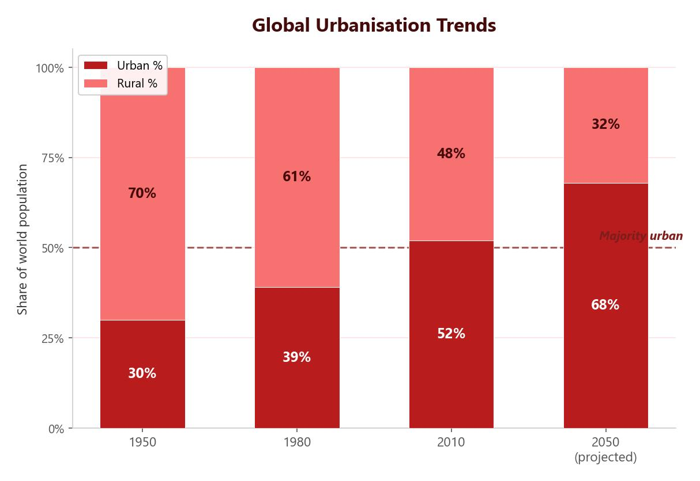

What Is Urbanisation?
Urbanisation is the increase in the proportion of people living in towns and cities. In 2007 the world reached a landmark moment — for the first time in history, more people lived in urban areas than in rural areas. By 2050, it is projected that around 70% of the global population will live in cities.
In 2005, roughly 3.4 billion people lived in urban areas. By 2050, this figure is expected to reach 6.5 billion — nearly double in just 45 years.

How Do Rates of Urbanisation Vary?
Urbanisation is happening at different speeds around the world. The pattern depends largely on how developed a country is:
- HICs — were the first to urbanise during the Industrial Revolution. Most of their population already lives in cities (around 80%), so urbanisation rates have slowed and levelled off.
- LICs — are urbanising rapidly. High rates of rural-urban migration are driving fast city growth, especially in Africa and South Asia.
- NEEs — are also urbanising rapidly. Many South American NEEs urbanised earlier due to colonisation and industrialisation, but growth continues through natural increase rather than migration.
Why Do People Move to Cities?
Rural-urban migration is the main driver of urbanisation in LICs and NEEs. People move because of a combination of push factors (reasons to leave rural areas) and pull factors (reasons to move to cities).
Push factors (reasons people leave rural areas):
- Drought and climate hazards reduce crop yields, leading to food shortages.
- Farming is often subsistence — families produce only enough food to survive, with nothing to sell.
- Few doctors or hospitals, leading to poor general health.
- Schools provide only basic education, limiting future job prospects.
- Rural areas are isolated with poor roads, rail and internet connections.
Pull factors (reasons people move to cities):
- More well-paid jobs and a higher standard of living.
- Better education, leading to higher-paid employment.
- Better healthcare facilities and access to clean water.
- Improved transport and communication links.
- More entertainment and social opportunities.
- Friends and family who already live there.
Natural Increase in Cities
Rural-urban migration is not the only cause of city growth. Many migrants are young adults of childbearing age, so cities experience high rates of natural increase — more births than deaths. Improvements in healthcare, sanitation and water supply in cities also reduce the death rate and infant mortality, pushing the population even higher.
What Is a Megacity?
A megacity is a city with a population of more than 10 million people. In 2020 there were 34 megacities worldwide, and this number is predicted to reach 50 by 2050.
The world’s largest megacity is Tokyo, Japan, with a population of around 37 million. Other examples include Delhi (30 million), Shanghai (27 million), São Paulo (22 million) and Mexico City (22 million).
Where Are Megacities Found?
The distribution of megacities has changed dramatically over time. In the 1950s, most megacities were in HICs — cities like New York, London and Tokyo. Today, the pattern has shifted. The majority of megacities are now found in LICs and NEEs, particularly in Asia, Africa and South America.
- Asia has the most megacities, including Tokyo, Delhi, Shanghai, Beijing, Mumbai and Dhaka.
- Africa is seeing rapid growth — Lagos (Nigeria) and Kinshasa (DR Congo) are already megacities, with more expected.
- South America includes São Paulo, Buenos Aires and Rio de Janeiro.
- Europe and North America have fewer, and their growth is much slower.
Cities in LICs and NEEs are growing fastest for two main reasons. First, large-scale rural-urban migration is driven by the search for jobs, education and healthcare. Second, natural increase is high because many migrants are young and healthcare improvements reduce death rates. In contrast, HICs have already urbanised and their populations are growing much more slowly, or even declining in some cities.
By 2030, the UN predicts 10 new megacities will emerge, almost all in less developed regions. Cities such as Dar es Salaam (Tanzania), Luanda (Angola) and Lahore (Pakistan) are among those expected to cross the 10 million threshold.